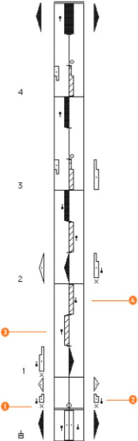
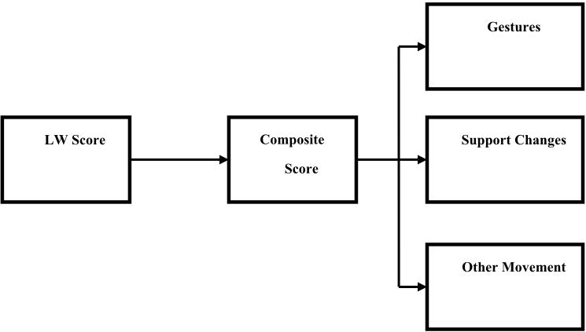
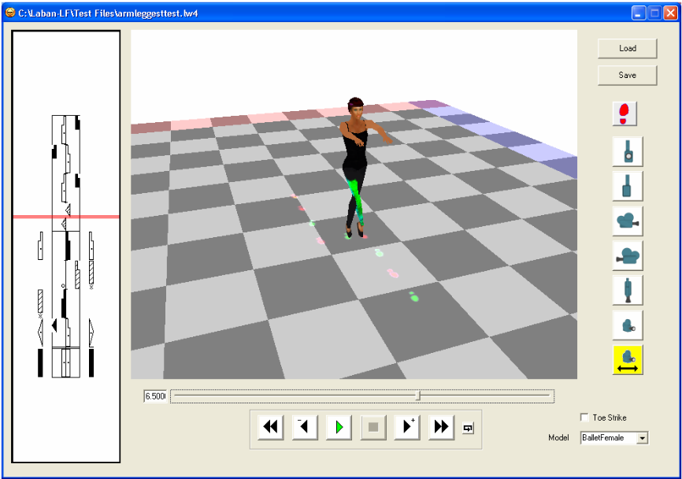

4th International Symposium on Virtual Reality, Archaeology and Intelligent Cultural Heritage VAST (2003)
D. Arnold, A. Chalmers, F. Niccolucci (Editors)
Lars Wilke 1 , Tom Calvert 2 , Rhonda Ryman 3 and Ilene Fox 4
1 Credo Interactive Inc., Vancouver, BC, Canada; 2 Simon Fraser University, Surrey, BC, Canada; 3 University of Waterloo, Ontario., Canada; 4 Executive Ditrector, Dance Notation Bureau, New York, NY, USA.
Abstract
Dance notation systems such as Labanotation provide a means to record the scores that are necessary for dance reconstruction and archival recording. To make Labanotation scores more accessible to dancers, choreographers and researchers the LabanDancer system has been developed to translate Labanotation scores recorded in the LabanWriter editor into 3-d human figure animations. The challenges involved in developing this translator are discussed.
Keywords:
Computer graphics, human figure animation, dance, notation, archives.
1. Introduction
Dance has long been considered an ephemeral art. However, with the advent of dance notation, a means was found for long-term objective documentation of dance that preserves works that would otherwise be lost. The Dance Notation Bureau (DNB) in New York has been working for 63 years to create, house and disseminate dance scores produced using the dance notation system called Labanotation (www.dancenotation.org). (It should be noted that other systems of dance notation exist - principally Benesh Notation, but Labanotation is the most widely used in North America). Scholars, students, performers and the public are provided an easily accessible, detailed record of choreography that allows for the study of the dances themselves in a way that no other medium does.
If dance research is to be undertaken with the same authority and integrity as other scholarly fields, it must have permanent written or digital records that provide source materials. It would be unthinkable for musicologists to work only with audio recordings, or scholars of theater only with films and videos of performances. Just as music scores and scripts are required, dance scholars need dance scores, a need especially compelling in a field that has for so long suffered the loss of its artistic masterpieces. Dance scores serve an analogous function to music scores. They are a blueprint of the dance and allow scholars to study the work, craft and intentions of the choreographer without the layer added by the performer.
While dance notation scores are fundamental to dance reconstruction and to dance research the unfortunate reality is that very few dancers or choreographers can read notation and even fewer are
notators expert in writing scores. Thus, many have recognized that there would be a considerable advantage to have a computer based tool to animate the notation. Likewise there would be advantage to take files for computer human animation and automatically translate them into notation. These needs led Ilene Fox of the Dance Notation Bureau to develop a collaborative project involving Simon Fraser University (Tom Calvert), University of Waterloo (Rhonda Ryman) and Credo Interactive Inc. (Lars Wilke). This collaborative work is conducted in cooperation with the LabanWriter team at Ohio State University (Lucy Venable and David Ralley).
This paper provides a background to the development of computer based tools for editing and interpreting dance notation and then describes the development of LabanDancer, a tool for animating Labanotation. In future versions, the output of LabanDancer will also be readable by DanceForms (formerly Life Forms Dance), human animation software that allows animations to be edited and combined with other works. Notation scores and animated representations of a dance each provide different information crucial to dance research. A notated score captures detail, intent, motivation and all the nuances of the work. An animation of the work allows viewing of the movement, from all angles and varying speeds. The animation is a visual representation, the outer appearance. The notation outlines the process by which the end can be achieved. The animation must specify exact positions for all body parts, even when their position is not specified by the choreographer. The notation can express the choreographer's intentions, focusing our attention on important details and, sometimes equally important, omitting irrelevant ones.

Each medium represents dance/human movement in a unique way, making the viewer aware of different ways to analyze which alter our perception of movement.
2. Computer Graphics Tools for Choreography and Notation
The idea of using computers to assist in recording and animating dance goes back at least to the 1960's and Noll's article in Dance Magazine [13]. Merce Cunningham also discussed these issues at about the same time [8]. Perhaps the first attempt to apply computers to Labanotation was Zella Wolofsky's 1974 Simon Fraser University masters thesis on the interpretation of selected Labanotation commands [19]. This was remarkable in that interactive computing, as we know it, had hardly been developed at this time; animation was produced by printing out simple stick figures on a line printer and photographing the print-outs one at a time to produce an animation sequence. Hardly interactive! Subsequently there were a number of projects that focused on different aspects of interpretation of Labanotation [1, 3, 4, 15] and there was also attention to Benesh Notation [14] and other systems [9]. The parallel work on human figure animation is summarized in Barsky et al [2]. In 1986 Calvert proposed a synthesis in the form of a language for human movement [5].
Out of this considerable interest two tools emerged that were of practical value to working notators and choreographers. LabanWriter was developed at Ohio State University under the leadership of Lucy Venable [18] and at Simon Fraser University Tom Calvert lead the team developing Life Forms [7]. LabanWriter took advantage of the graphics capabilities of the relatively inexpensive Macintosh computer to provide a simple and intuitive word processor like system for creating and editing Labanotation scores. (MacBenesh - a similar system for Benesh Notation - was developed by Rhonda Ryman and her colleagues at University of Waterloo [14]). At about the same time Life Forms was developed to provide choreographers and animators with a simple, user friendly system to experiment with patterns of movement in animated human figures. Scholars, students, notators, educators, and choreographers have been using both LabanWriter and Life Forms and many have suggested that they should be linked.
Two other systems for editing Labanotation have been developed. Calaban uses the well known computer aided design package AutoDesk to edit Labanotation scores [16] and Don Herbison-Evans and his colleagues at University of Technology Sydney have developed the LED editor for selected Labanotation commands [10]. The LED editor interfaces to the LINTER interpreter but this only recognizes a subset of Labanotation.
3. Translating Notation
3.1 The Labanotation Score
Figure 1 shows a relatively simple score for ballet. The score is written on a staff that goes up the page with time laid out in measures to match the measures of the music. Tick marks are used to indicate the beats, barlines across the staff show the start and end of the measure.
The Labanotation staff is read from bottom to top. The space below the double bar lines at the bottom is for the starting position. The double bar lines at the top indicate the end of the movement. Where the symbol is placed on the staff tells you the part of the body doing the movement. The dark lines are the staff lines. The centre line of the staff represents the centre line of the body. Supports (usually the feet) are written alongside the centreline. Symbols to the right of this line are for the right side of the body, symbols to the left for the left side.
The length of a symbol tells you the timing of the movement and the shape of the symbol tells you the direction of the movement. The shapes of the symbols indicate nine different directions in space.
The shading of the symbol tells you the level of the movement. For steps, low level is with a bent leg, middle level is with a straight leg, and high level is up on the toes. For gestures, middle level is with the limb parallel to the floor. The hand or the foot is on the same level as the shoulder or hip. Low level is below this, high level above.
By simply reading a single symbol on a staff, one immediately knows: the direction of the movement, the part of the body doing the movement, the level of the movement and the length of time it takes to do the movement.
Any symbol can be used to show either a step or a gesture. A step is a movement that takes weight (support) whereas a gesture is a movement that does not take weight. For example, the forward symbol can be used to show either a step forward or a forward gesture.
A complete introduction to Labanotation can be found in Hutchinson-Guest's book [11] and several introductions are available online (http://www.dancenotation.org, http://www.rz.unifrankfurt.de/~griesbec/LABANE.HTML).


3.2 The LabanWriter File
The LabanWriter editor has been developed at The Ohio State University under the leadership of Professor Lucy Venable. Currently it is only available for the Macintosh but a Windows version is under development. The software can be freely downloaded from the website of the Ohio State Dance Department (www.dance.ohiostate.edu/research/LabanWriter/). This site also provides
© Eurographics Association 2003.
.
a history of the LabanWriter development and the format of LabanWriter files.
LabanWriter allows the user to create a Labanotation score using a word processor like metaphor. Symbols are selected from a menu and placed on the staff in the column to represent the appropriate body part, with the lower end of the symbol at the start time of the movement and the length of the symbol appropriate to the length of the movement. The program creates two files - one is an image file (.png) that can be displayed with many systems and the second (.lw) is a file with information identifying the symbols chosen and their location on the staff (x, y coordinates). However, the LabanWriter has no knowledge base that allows it to parse the score and nothing prevents the user from entering complete nonsense.
The LabanDancer program described in this paper accepts both of these LabanWriter files as input and creates a 3-D animation of the notated dance as well as showing the Labanotation score (Figure 3). LabanDancer will be available for both the PC and the Macintosh and will have an output format readable by DanceForms (formerly Life Forms Dance).
3.3 Parsing the symbols into a composite score
Labanotation makes use of modifier signs that are placed below a symbol to modify its meaning. Examples include signs for folding and contracting, and signs for specific body parts. Other symbols are placed next to a sign to indicate that a movement is accented, one part of the body it touching another or a limb is rotated. Path signs are used to modify the path to be followed (e.g. a circular path turning to the right). There are also floor plans to show the positions and paths traveled on stage. Thus the parser that interprets the LabanWriter file first must associate all modifying signs with the symbol they are modifying and deduce from the column whether it is a support or gestural movement. The result of this parsing is a composite score where each element of the score represents a movement. This is not a visible score but rather a time ordered list within the software.
3.4 Three processes
The composite score is next parsed into three streams (Figure 2). The first interprets gestures - these are non-weight bearing movements of any body part. The second interprets support changes (including locomotion) and the thirds involves other issues such as repetition of a sequence, use of floor plans, etc.
While much of Labanotation is explicit - i.e. it objectively specifies the orientation of limb segments at a particular time, there are numerous instances where the Labanotation is implicit - i.e. it relies on the knowledge of the notator and the dancer to deduce the movement in the context of the piece in question. Thus the translator program must include a knowledge base and an inference engine to deduce these movements from their context.
3.4.1 Gestures
The Labanotation symbols generally indicate quite unambiguously the start time, end time and final orientation of limb parts involved in a gesture. They do not, however, explicitly specify the path to be followed in carrying out the gesture. The path can be deduced once the starting and end orientations are known. We have implemented an inverse kinematics algorithm and apply constraints to ensure that articulated limbs carry out the movement in an appropriate plane. For some movements it is necessary to add intermediate key frames as additional constraints to ensure that articulated limbs do not move inappropriately, such as passing through other body parts, for example.
The parser that interprets gestural commands is very simple at the high level - as noted, final limb orientations are usually explicitly specified. However, at a detailed level the parser is extremely complex since it must ensure that every movement is appropriate to the context. In addition to the constraints noted above, other contextual issues include (a) the style of the dance - a foot may be required to be pointed in ballet, but not in folk dance, for example; (b) timing conventions used in Labanotation - although a gesture is written within a beat, the usual timing that is understood is for it to begin moving before the beat and arrive on the beat.
3.4.2 Support changes
In Labanotation the concept of support and support change is the basis for all locomotion. The notation shows which limb supports the body over a period of time and the direction (if any) of the movement. Support changes from foot to foot combined with forward movement, for example, result in a forward walk or run. Thus the notation does not explicitly specify the flexion and extension of the limbs concerned, leaving it to the intelligent dancer to recognize which movements are necessary to achieve support change in a specific direction.
To animate support changes we first explored an approach that was based on a stored database of animation sequences for the common transitions. In many ways this worked well - the notation specialist could create a keyframe animation sequences to achieve the required transition. We implemented what was, in essence a finite state machine to formalize this. Unfortunately, however, the approach did not scale well, as the number of possible transitions rises exponentially with the complexity of movement. Also, it was found that the animation sequences for each transition often had to be modified depending on the movements that preceded and succeeded the transition in question. Thus we explored more general approaches that did not depend on explicit keyframing of all possible transitions.
The approach that has been adopted is based on van de Panne's footprints algorithm for animation of human locomotion [17]. This approach attempts to optimize the movement of centre of mass of the body while creating steps that match the position and timing of pre-specified footprints. There were two issues we had to address in implementing this approach: (a) how to generate the footprint positions from the Labanotation support changes, and (b) how to add constraints to the algorithm so that intricate dance steps were realistic and did not result in limbs penetrating each other. With some experimentation we were able to address both of these issues although there will be some movement patterns (often at the limits of what is likely or possible) where the movement may not be as elegant as desired. The examples of animation accompanying this paper will show that generally this approach has been highly successful and has avoided the creation of an extensive database of pre-animated transitions.
3.4.3 Other movement
There are a variety of other Labanotation symbols that are not translate into either gestures or changes in support. These include techniques to handle multiple dancers, the use of floor plans, symbols to indicate repetition of a sequence, etc. The parser recognizes these symbols and has procedures to implement the corresponding movement.
4. Creating an animation
One difficulty with the separation of Gestures and Support Changes in Labanotation is that the two sets of commands can provide conflicting animation to limb segments. For example, during a forward walk animated on the basis of support changes, gestures may also be specified for the legs and particularly for the leg that is not providing support. This requires that the gestures be judiciously superimposed on the support changes, but not to the detriment of support.
5. The LabanDancer Prototype
The first LabanDancer prototype has been implanted for Windows and will shortly be available for Mac OS. The user interface is shown in Figure 3. There are fairly standards controls that allow the user to adjust the viewpoint by rotating the stage on all three axes and by providing for zoom-in and zoom-out. In addition to totally interactive control with the mouse, fixed views can be chosen or the camera can follow the dancer.
There is a choice of animated figures - currently male and female ballet and male and female modern. The user can also select a more abstract figure if desired. The display can show the footprints chose by LabanDancer - this is important since if the algorithm to choose these is wrong, the movement cannot be correct. Also, a sound output is being implemented to provide a metronome like "Click" to indicate each beat.
An important feature of the interface is the display of a simultaneous graphic of the original Labanotation score on the left of the screen. A cursor moves up the score as the animation progresses.
Initial experience with this prototype has been extremely promising. It is already a very useful tool for teaching elementary notation. However, considerable work is required to thoroughly test the accuracy of the algorithms with complex notation.
A feature not yet implemented is the output of a file that can be read by DanceForms (formerly Life Forms Dance). This human animation software is designed to allow dancers and choreographers to explore the composition of human movement with a user friendly interface. The output of LabanDancer, once it has been read into DanceForms can then be edited, and combined in a variety of ways with other animation from animation, from motion capture or from LabanDancer translations of other Labanotation scores.
6. Summary
A translator between Labanotation scores and LabanDancer animation will dramatically increase the dance field's ability to make use of existing scores. Artistic directors, students and dancers with little or no knowledge of notation will have the ability to see the movement recorded in the DNB's 600 scores and the thousands of Labanotation scores existing around the world. The publication Laban Notation Scores: An International Bibliography published by the International Council of Kinetography Laban, lists 70 different categories in its genre index including dances of Armenia, China, Hungary, Bali and Mexico as well as character, modern, ballet, tap and historical dance. The interface will facilitate access to these materials by all dancers. Both LabanDancer and LabanWriter are tools that can be used with any dance form.
Our future plans call for development of a reverse translator from DanceForms animations to Labanotation scores; this will yield an enduring written record that requires only refinement by a notator, increasing DNB's ability to provide important resources to researchers and students. Simultaneous generation of a Labanotation score, for example by Merce Cunningham and other choreographers who use DanceForms, would be a significant first step towards a lasting heritage for future dancers and students.
Many choreographers and dancers have suggested that motion capture technology be used to facilitate the
© Eurographics Association 2003.
.
development of Labanotation scores. Since DanceForms can accept most standard motion capture data as input, the translator also provides a way to create notation directly from live dance.
7. Acknowledgements
The authors acknowledge the current support for this project provided by a grant to the Dance Notation Bureau from the US National Endowment for the Humanities. Earlier support was provided by the US National Endowment for the Arts and the National Initiative to Preserve of America's Dance (NIPAD). We are also acknowledge th e advice of Dr. Michiel van de Panne on the footprints algorithm.
References
1. N. Badler and S. Smoliar. Digital Representations of Human Movement. Computing Surveys, 11(1):19--38, March 1979.
2. B. Barsky, N. Badler and D. Zeltzer (eds), Making them Move: Mechanics, Control and Animation of Articulated Figures, Morgan and Kaufmann, pp. 35-50,1990. (Proc. of NSF/MIT 1989 Symposium).
3. M. Brown, S. Smoliar, and L. Weber, Preparing Dance Notation Scores with a Computer. Computers and Graphics, 3(1):1-7, 1978.
4. T.W. Calvert and J. Chapman, "Computer Assisted Notation of Human Movement", in Proc. of 1978 ACM Conf., pp. 731-736, 1978
5. T.W. Calvert. Towards a Language for Human Movement. Computers and the Humanities, 20:2, (1986), pp. 35-43.
6. T.W. Calvert, C.Lee, G. Ridsdale, S. Hewitt and V. Tso, "The interactive composition of scores for dance," Dance Notation Journal, 1986.
7. T.W. Calvert, C. Welman, S. Gaudet, T. Schiphorst and C. Lee. "Composition of Multiple Figure Sequences for Dance and Animation". The Visual Computer, vol. 7, pp. 114-121, 1991.
8. Merce Cunningham, Personal communication, 1990.
9. J. Gray. "Dance in computer technology: a survey of applications and capabilities". Interchange, 14(4):15-25, Winter 1984.
10. F.E.S. Hunt, G. Politis and D. Herbison-Evans,
LED & LINTER: An X-WINDOWS Mini-Editor and Interpreter for LABANOTATION , Technical Report 343 , Basser Department of Computer Science, University of Sydney, April 2003.
11. A. Hutchinson-Guest, Labanotation: The System of Analyzing and Recording Movement, 3 rd Edition, Theatre Arts, 1987.
12. M. Mizuguchi, Customizing Human Animation Transitions for Gaming Environments, MSc
Thesis, Simon Fraser University, December 2000.
13. A. Noll, Choreography and Computers. Dance Magazine, pages 43--45, January 1967.
14. R. Ryman and R. Hughes-Ryman. The MacBenesh Editor: A Word Processor for Benesh Notation. Dance Notation Journal, 4(2):16-- 26, Fall 1986.
15. S. Smoliar, N. Badler, L. Weber. An architecture for the simulation of human movement. In ACM 78:Proceedings, 1978 ACM Annual Conference, pages 737--745, December 1978.
16. University of Birmingham: Calaban Project. http://www.bham.ac.uk/calaban/frame.htm
17. M. van de Panne. From Footprints to Animation. Computer Graphics Forum, Volume 16, Number 4 (October 1997), p. 211-223.
18. L. Venable, S. Sutherland, L. Ross, and M. Tinsley. LabanWriter 2.0, Ohio State University, 1989.
19. Z. Wolofsky, Computer Interpretation of Selected Labanotation Commands. M.Sc. thesis, Simon Fraser University, 1974.




© Eurographics Association 2003.
.